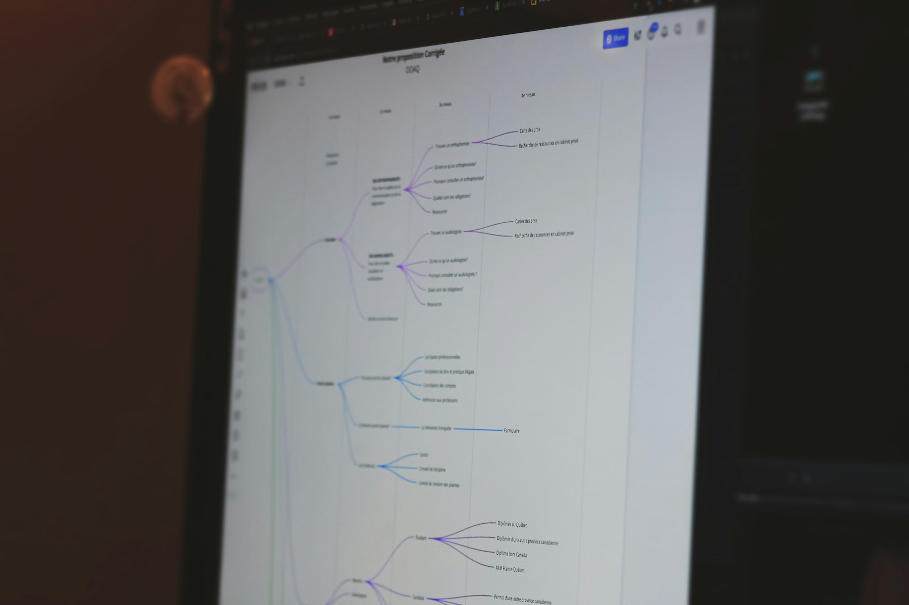

TL;DR
Freelancers can boost efficiency using the best AI tools in project management, content creation, design, finance, and communication. These tools automate tasks and enhance creativity.

AI-Powered Project Management
Using AI project management tools can change how freelancers organize their work. Tools like Trello and Asana have integrated AI features that help you prioritize tasks. They analyze your past work patterns and suggest deadlines based on your workload. To use these tools effectively, start by creating your project board. Add all your tasks, and let the AI analyze the urgency. You can also set up notifications to remind yourself about deadlines. This helps in maintaining a steady workflow and ensures you meet client expectations consistently. By automating your task management, you free up time to focus on the creative aspects of your projects.
Content Creation and Copywriting
Freelancers involved in content creation can leverage AI tools like Grammarly and Jasper. These tools assist not only in grammar checks but also in generating ideas and optimizing content for SEO. To get started, input a topic into Jasper and let it generate content ideas. You can then refine these ideas into detailed outlines. Grammarly helps you proofread your writing, highlighting errors and suggesting improvements, ensuring that your content is polished before presenting it to clients. Using these tools can significantly reduce the time spent on revisions and enhance overall writing quality.
Design Assistance with AI
For freelancers in the design field, AI-based tools like Canva and Adobe Spark make it easier to create stunning visuals. These platforms offer templates that can be customized, saving time on design work while maintaining high quality. Begin by choosing a template relevant to your project. Modify text, colors, and images to fit your brand. The AI features suggest design elements that work well together, enhancing your designs. By incorporating these tools into your workflow, you’ll be able to produce eye-catching graphics quickly, impressing clients with your efficiency and creativity.
Smart Financial Management
Freelancers must manage finances efficiently, and AI tools like QuickBooks and FreshBooks assist in tracking expenses and invoices. These tools automate calculations and offer insightful reports. To effectively use these tools, upload your invoices and receipts, and let the AI manage your bookkeeping. Set reminders for payment collections to ensure a steady cash flow. With automated financial management, you will spend less time on accounting tasks, allowing you to allocate more time toward client work.
Client Communication Made Easy
Effective communication is critical for freelancers. AI tools like Calendly and Crystal can streamline this process. Calendly helps schedule meetings without the back-and-forth, while Crystal analyzes client communication styles. Set up your Calendly link and share it with clients to let them pick a time that suits both parties. Use insights from Crystal to tailor your emails and messages to fit the client’s preferences, improving relationship quality. By using these tools, you foster better client interactions, leading to potential repeat business and referrals.
FAQ
What are AI tools for freelancers?
AI tools for freelancers automate tasks, enhance productivity, and improve work quality in areas like project management, content creation, and finance.
How can I choose the right AI tools?
Assess your main freelancing tasks, read reviews, and consider free trials to find tools that best fit your workflow and needs.
Are AI tools expensive?
Many AI tools offer free versions or trial periods, allowing freelancers to start without financial commitment before upgrading.
Can AI tools improve my productivity?
Yes, these tools minimize repetitive tasks, optimize workflows, and help you focus on creative aspects, boosting overall productivity.
Do I need technical skills to use AI tools?
Most AI tools are designed to be user-friendly, requiring minimal technical skills. Many provide tutorials and support to help you get started.
Photo credits
- Photo 1: Compagnons on Unsplash (https://unsplash.com/@sigmund) (https://unsplash.com/photos/black-flat-screen-computer-monitor-Rez3-Mv7n_c)
- Photo 2: Clay Banks on Unsplash (https://unsplash.com/@claybanks) (https://unsplash.com/photos/macbook-pro-on-brown-wooden-table-0f09OA343aw)
- Photo 3: Growtika on Unsplash (https://unsplash.com/@growtika) (https://unsplash.com/photos/a-computer-with-a-keyboard-and-mouse-yGQmjh2uOTg)
- Photo 4: Kenny Eliason on Unsplash (https://unsplash.com/@heyquilia) (https://unsplash.com/photos/macbook-pro-dDvrIJbSCkg)
- Photo 5: Maxim Tolchinskiy on Unsplash (https://unsplash.com/@shaikhulud) (https://unsplash.com/photos/man-in-black-tank-top-wearing-black-sunglasses-using-computer-u_Z1U7cKqnw)